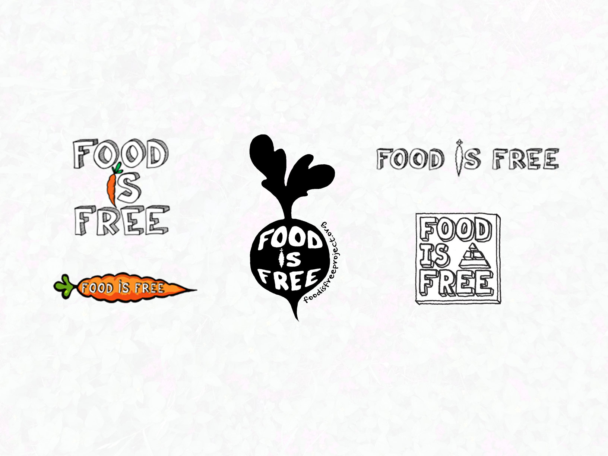
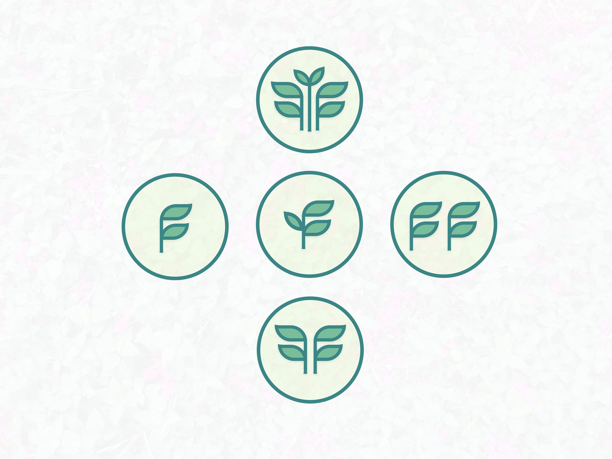
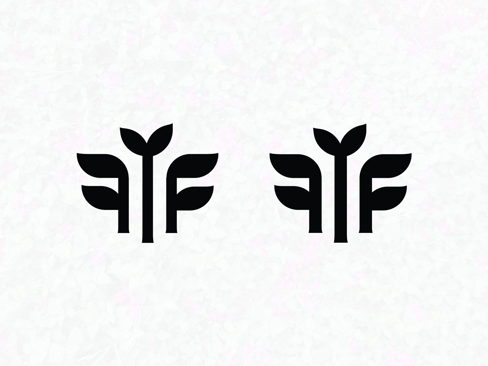
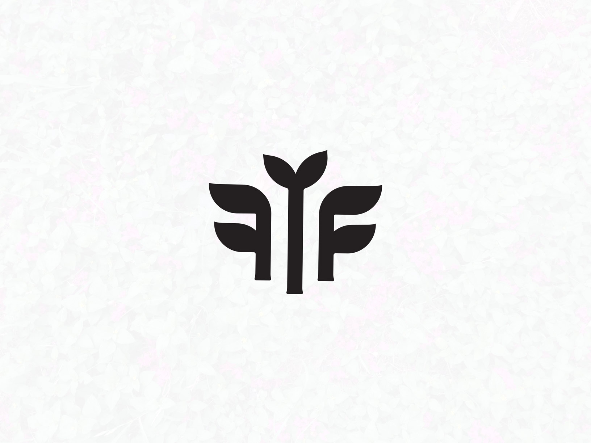
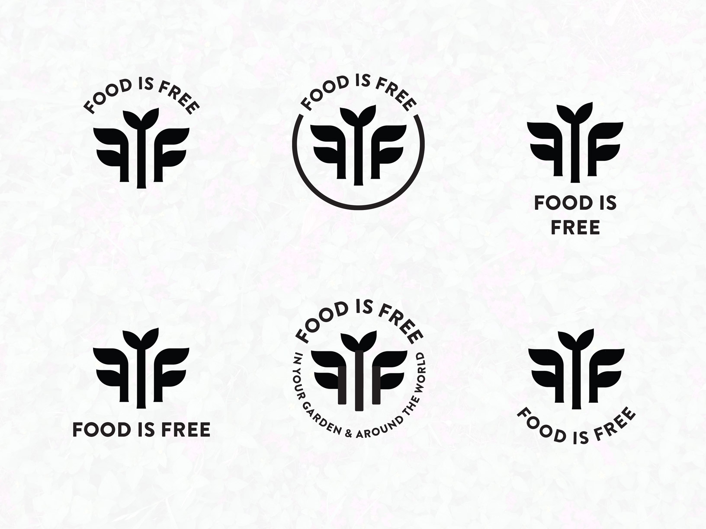
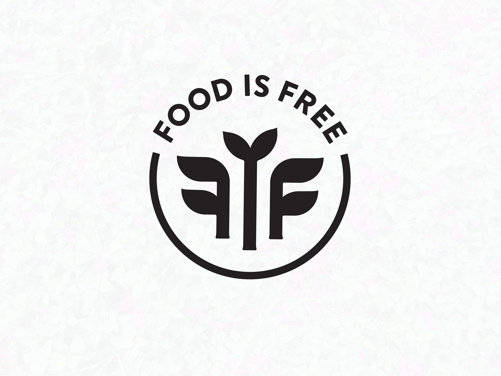

Project:
Food is Free is a non-profit organization focused on urban gardening education and community organization. What started as a small grass roots movement in Austin, TX has gained global momentum — sister projects are popping up worldwide and their message reaches hundreds of thousands people online. Last year they open-sourced a new logo, and I submitted a design. I was thrilled when they decided to use my design for the future identity of the organization.
Process:
Previous Logos:
Their previous logos referenced growth and had a hand made esthetic. They were appropriate for a small grass roots organization, but I believe failed to represent what the organization had become.

Doodles:
I wanted the new logo to continue this tribute to organic growth but also to demonstrate that Food is Free had become a global movement. The organization had grown up, and therefore I felt a more polished and professional approach would best. I saught to create a monogram using leaves.

Simpler, thicker:
This was a good start. I liked the top design the most and sought to further simplify it. I thickened everything up and removed the two-tone colors and gradients. Here are varying degrees of thickness.

Final mongram:
I rounded out the point where the leaves connect to the stem, and thickened the base of the stems. The rounded corners are more welcoming, and the thick base balances and grounds the design.

Incorporating text:
I chose to use Brandon Grotesque because it conveys a bold and clear message while still feeling welcoming and warm. I presented Food is Free with several ways to incorporate text - they preferred the top center.

Final:

Tools used:
- Illustrator
- Sketch